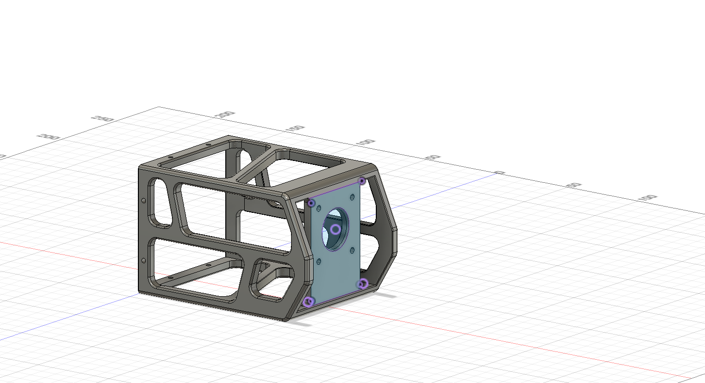
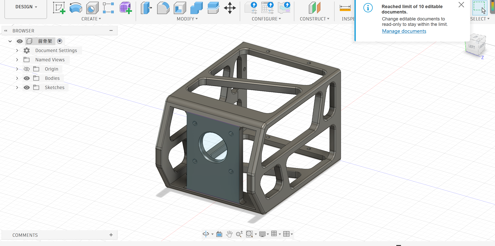
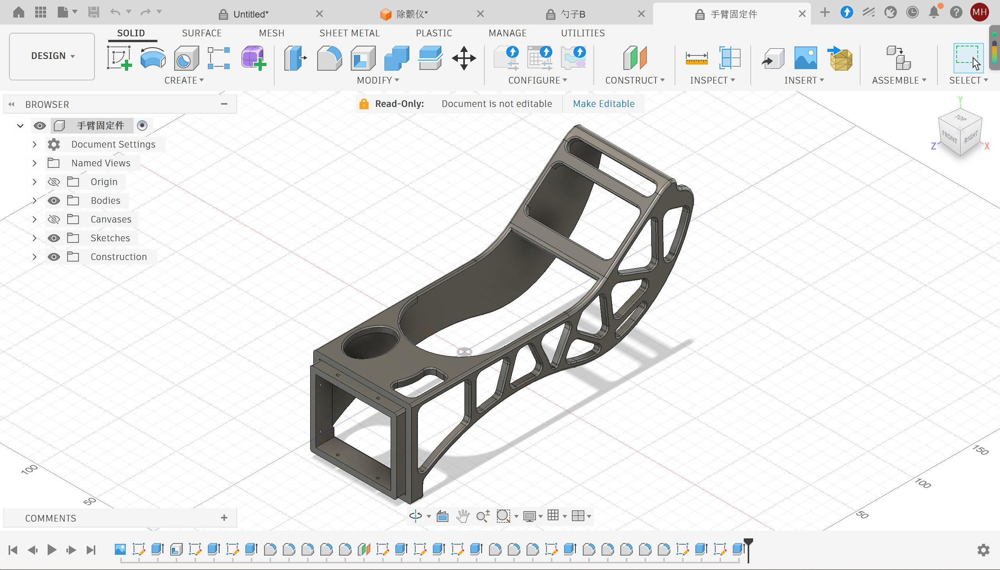
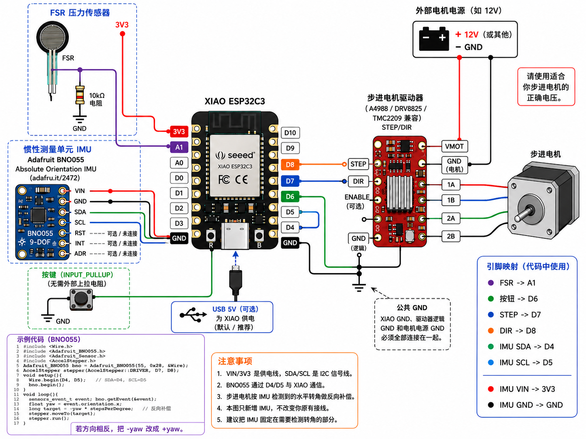

Project Overview
This project is an arm-mounted tableware assistance prototype intended to reduce the effect of involuntary rotational movement while a user is eating. A force-sensitive resistor detects whether the user is applying pressure to the handle. Once activated, an Adafruit BNO055 absolute orientation sensor measures rotation around the selected X-axis.
The XIAO ESP32C3 processes the sensor data and converts the measured angular change into STEP pulses for a 17HS19-2004S1 stepper motor. The motor then moves in the opposite direction in an attempt to compensate for the detected motion and stabilize the attached spoon or chopsticks.
The project combines several areas of digital fabrication and physical computing: CAD design in Fusion 360, 3D-printed mechanical components, pressure sensing, inertial measurement, real-time microcontroller programming, motor control, and iterative prototyping.
Page Contents
Main Demonstration Video
The following video gives an overall explanation of the completed prototype. It demonstrates the pressure sensor, IMU, XIAO ESP32C3, stepper motor, motor driver, and mechanical support structure working together.
Main prototype explanation and demonstration.
Fusion 360 Final Design
Once the electronic control concept was working, I needed to convert the circuit and motor system into a physical form that could actually be worn and used. I therefore designed the final mechanical structure in Fusion 360.
The CAD stage was important because the prototype contains several components that must remain aligned with each other. The stepper motor must rotate around the intended mechanical axis, the IMU must remain firmly attached so that its measurements correspond to actual motion, the electronic components need enough space for wiring, and the user's arm needs to be supported without completely restricting movement.

Final Design View 1
This view shows the overall geometry and proportions of the final wearable structure. It helped me evaluate how the arm-support section and stabilization mechanism fit together as one object.

Final Design View 2
This view gives a different perspective on the mechanical layout, including the relationship between the structural frame, the motorized section, and the space reserved for electronics and wiring.

Final Design View 3
This angle was useful for checking assembly, clearance, and the geometry of the final mechanism before fabrication and physical testing.
Design Process
Why CAD Was Important
The CAD model was not only a visualization of the final product. It was also a way to identify mechanical problems before fabrication. For example, if the IMU were placed on a flexible section of the frame, it could measure vibration instead of the intended arm rotation. Similarly, if the stepper motor axis were not aligned correctly, a correct software command could still produce incorrect mechanical compensation.
Fusion 360 therefore helped connect the electronic logic to the physical behavior of the prototype. The design made it possible to think about component clearance, mechanical support, alignment, wire routing, assembly, and user interaction before committing to the final physical build.
First-Person Usage Demonstration
The following video shows the device from a first-person perspective. Unlike the main demonstration video, which explains the prototype from the outside, this video focuses on what the device looks and feels like from the user's point of view during actual operation.
First-person perspective showing how the prototype is positioned and used.
This perspective was useful for evaluating more than just whether the electronics functioned. It also allowed me to observe the size of the mechanism relative to the user's arm, how the tableware was positioned during use, how much movement remained possible, and whether the stabilization behavior felt practical from the user's perspective.
Technical Documentation
1. Complete System Structure
The complete system can be divided into five connected stages:
The force-sensitive resistor acts as an activation control. The system does not continuously compensate when the handle is not being used. Once sufficient pressure is detected, the current IMU orientation is recorded and defined as the starting zero position.
After activation, the IMU is read every 20 milliseconds. The program calculates the relative X-axis rotation from the stored zero, applies filtering, converts the angle into motor steps, and continually updates the motor target.
2. BNO055 Absolute Orientation IMU

BNO055 wiring and orientation reference used during development.
The project uses the Adafruit BNO055 Absolute Orientation IMU. The module combines three internal sensing systems.
| Internal Sensor | Measured Quantity | Role |
|---|---|---|
| Accelerometer | Linear acceleration and gravity direction | Helps estimate the sensor's orientation relative to gravity. |
| Gyroscope | Angular velocity | Detects the speed and direction of rotational movement. |
| Magnetometer | Magnetic field direction | Provides an additional reference for absolute orientation. |
The BNO055 performs sensor fusion internally. This reduces the amount of raw sensor processing that must be performed by the XIAO ESP32C3 and allows the program to work with a fused orientation estimate.
3. IMU and Controller Wiring
The BNO055 communicates with the XIAO ESP32C3 through I²C. Four connections are required.
| BNO055 Pin | XIAO ESP32C3 | Function |
|---|---|---|
| VIN | 3V3 | Power input for the IMU breakout. |
| GND | GND | Common electrical reference. |
| SDA | D4 | I²C data line. |
| SCL | D5 | I²C clock line. |
The other BNO055 pins are not needed for the current I²C configuration.
| Pin | Current Use |
|---|---|
| 3VO | Not connected. |
| RST | Not connected. |
| PS0 / PS1 | Not connected. |
| INT | Not connected. |
| ADR | Not connected; the default I²C address is used. |
4. Measuring Rotation Around the X-Axis
This project considers only rotation around the selected X-axis. The physical X-axis of the IMU must therefore be aligned with the mechanical axis that the stabilization system is intended to measure.
The program reads a quaternion from the BNO055 and converts the quaternion into a roll angle around the X-axis.
roll = atan2(
2(wx + yz),
1 - 2(x² + y²)
)Internally, the angle is represented as a signed value.
| Direction | Internal Signed Angle |
|---|---|
| One rotation direction | Positive, such as +70° |
| Opposite rotation direction | Negative, such as −70° |
5. Alpha-Angle Convention
For project explanation, the signed X-axis angle can also be represented using an alpha value between 0° and 180°.
| Physical Rotation | Signed Angle | Alpha |
|---|---|---|
| 70° in the positive direction | +70° | 70° |
| 70° in the opposite direction | −70° | 110° |
| 30° in the opposite direction | −30° | 150° |
If signedAngle is positive:
alpha = signedAngle
If signedAngle is negative:
alpha = 180 + signedAngleTherefore:
alpha = 110°
180° - 110° = 70°
Therefore:
alpha = 110° represents -70°.6. Defining the Initial Angle as Zero
When pressure is first detected, the current IMU orientation is recorded. The BNO055's absolute orientation is not actually reset. Instead, the software stores that orientation as the reference zero.
For example, assume the absolute IMU angle is 32° when the user first presses the FSR.
imuZeroAngle = 32°At that instant:
relativeAngle = currentAngle - imuZeroAngle
relativeAngle = 32° - 32°
relativeAngle = 0°If the sensor later reaches 47°:
relativeAngle = 47° - 32°
relativeAngle = +15°The motor compensation target becomes:
motorTargetAngle = -15°7. FSR Pressure Activation
The force-sensitive resistor is connected to analog pin A1 through a voltage-divider circuit. The analog reading is converted using the calibration relationship developed during testing:
weight = 0.1424 × rawValue - 177.3Negative calculated values are clamped to zero.
if (weight < 0) {
weight = 0;
}When pressure rises above the activation threshold, stabilization begins. Releasing the pressure sensor disables the compensation system.
8. Stepper Motor Angle Conversion
The prototype uses a 17HS19-2004S1 stepper motor. During testing, 200 STEP pulses produced exactly one complete revolution. Therefore the driver is currently operating in full-step mode.
200 steps = 360°
1 step = 1.8°
steps per degree = 200 / 360
steps per degree ≈ 0.5556The IMU measures angle, while the stepper driver receives discrete STEP pulses. The desired motor angle must therefore be converted.
targetSteps =
motorTargetAngle × stepsPerDegreeExample:
IMU relative movement = +30°
Motor compensation = -30°
targetSteps =
-30 × 200 / 360
targetSteps ≈ -16.67
rounded target = -17 stepsSeventeen full steps correspond to:
17 × 1.8° = 30.6°9. Real-Time 20 Millisecond Control Cycle
An early version of the program compared IMU readings every ten seconds. This method was useful for confirming the basic logic, but it was far too slow for practical stabilization.
The final program therefore uses:
CONTROL_INTERVAL_MS = 20This corresponds to:
1000 / 20 = 50 control updates per second
The program does not wait for the motor to reach the previous target.
The target is continuously updated using stepper.moveTo(),
while stepper.run() is called repeatedly to generate the
required STEP pulses.
10. Filtering and Dead Zone
IMU measurements contain small fluctuations. Without filtering, these fluctuations could repeatedly change the stepper target.
Low-Pass Filter
filteredAngle =
filteredAngle +
FILTER_ALPHA *
(measuredAngle - filteredAngle)The current coefficient is:
FILTER_ALPHA = 0.35| Filter Setting | Effect |
|---|---|
| Larger coefficient | Faster response, but more noise. |
| Smaller coefficient | Smoother response, but greater delay. |
Dead Zone
ANGLE_DEADZONE = 0.4°Changes smaller than this value are ignored so that tiny sensor fluctuations do not continuously change the motor target.
11. Software Motor Limits
The motor is limited to ±90° relative to its startup position.
90° × 200 / 360 = 50 stepsTherefore:
Minimum position = -50 steps
Maximum position = +50 stepsComplete Final Arduino Code
This is the final real-time version using a 20 millisecond control interval. All comments inside the Arduino code are written in English.
#include <Wire.h>
#include <Adafruit_BNO055.h>
#include <Adafruit_Sensor.h>
#include <utility/imumaths.h>
#include <AccelStepper.h>
#include <math.h>
#define I2C_SDA D4
#define I2C_SCL D5
const int FSR_PIN = A1;
const int STEP_PIN = D7;
const int DIR_PIN = D8;
AccelStepper stepper(
AccelStepper::DRIVER,
STEP_PIN,
DIR_PIN
);
Adafruit_BNO055 bno =
Adafruit_BNO055(55, 0x28, &Wire);
const float FSR_K = 0.1424f;
const float FSR_B = -177.3f;
/*
Increase this value if the FSR activates too easily.
The value is measured in fitted grams.
*/
const float PRESSURE_THRESHOLD_GRAMS = 0.0f;
/*
The 17HS19-2004S1 completed one full revolution
after 200 STEP pulses during testing.
The driver is therefore operating in full-step mode.
*/
const float FULL_STEPS_PER_REVOLUTION = 200.0f;
const float MICROSTEPS = 1.0f;
const float GEAR_RATIO = 1.0f;
const float STEPS_PER_DEGREE =
FULL_STEPS_PER_REVOLUTION *
MICROSTEPS *
GEAR_RATIO /
360.0f;
const float MAX_SPEED = 350.0f;
const float ACCELERATION = 250.0f;
/*
Use -1.0 for opposite-direction compensation.
Change this to +1.0 if the physical direction is reversed.
*/
const float MOTOR_DIRECTION = -1.0f;
const float ANGLE_DEADZONE = 0.4f;
const float MAX_MOTOR_ANGLE = 90.0f;
const long MAX_MOTOR_STEPS =
lroundf(
MAX_MOTOR_ANGLE *
STEPS_PER_DEGREE
);
/*
Twenty milliseconds produces fifty control updates per second.
*/
const unsigned long CONTROL_INTERVAL_MS = 20UL;
/*
Serial output is slower than the control loop to reduce overhead.
*/
const unsigned long PRINT_INTERVAL_MS = 100UL;
/*
A larger filter value responds faster.
A smaller filter value produces smoother data.
*/
const float FILTER_ALPHA = 0.35f;
unsigned long lastControlTime = 0;
unsigned long lastPrintTime = 0;
bool controlActive = false;
float imuZeroAngle = 0.0f;
float filteredAngle = 0.0f;
long motorSessionOrigin = 0;
float latestAlpha = 0.0f;
float latestRelativeAngle = 0.0f;
float latestWeight = 0.0f;
long latestTargetSteps = 0;
/*
Normalize an angle to the range from -180 to +180 degrees.
*/
float wrapTo180(float angle) {
while (angle > 180.0f) {
angle -= 360.0f;
}
while (angle < -180.0f) {
angle += 360.0f;
}
return angle;
}
/*
Read the FSR and apply the fitted calibration equation.
*/
float readFSRWeight(int &rawValue) {
rawValue = analogRead(FSR_PIN);
float weight =
FSR_K * rawValue +
FSR_B;
if (weight < 0.0f) {
weight = 0.0f;
}
return weight;
}
/*
Read the BNO055 quaternion and calculate roll
around the selected X-axis.
*/
float readRawRollX() {
imu::Quaternion q =
bno.getQuat();
double w = q.w();
double x = q.x();
double y = q.y();
double z = q.z();
double numerator =
2.0 * (w * x + y * z);
double denominator =
1.0 -
2.0 * (x * x + y * y);
double rollRadians =
atan2(
numerator,
denominator
);
float rollDegrees =
rollRadians *
180.0f /
PI;
return wrapTo180(
rollDegrees
);
}
/*
Return the signed X-axis angle.
Positive example:
signed angle = +70 degrees
alpha = 70 degrees
Negative example:
signed angle = -70 degrees
alpha = 110 degrees
*/
float readSignedXAngle(
float &alphaOut
) {
float signedAngle =
readRawRollX();
signedAngle =
constrain(
signedAngle,
-90.0f,
90.0f
);
if (signedAngle >= 0.0f) {
alphaOut =
signedAngle;
} else {
alphaOut =
180.0f +
signedAngle;
}
return signedAngle;
}
/*
Average several readings when pressure first activates
to establish a more stable software zero.
*/
float readInitialZeroAngle() {
const int SAMPLE_COUNT = 5;
float total = 0.0f;
for (
int i = 0;
i < SAMPLE_COUNT;
i++
) {
float temporaryAlpha = 0.0f;
total +=
readSignedXAngle(
temporaryAlpha
);
delay(4);
}
return
total /
SAMPLE_COUNT;
}
/*
Limit the motor target to the permitted software range.
*/
long limitMotorTarget(
long target
) {
if (
target >
MAX_MOTOR_STEPS
) {
return MAX_MOTOR_STEPS;
}
if (
target <
-MAX_MOTOR_STEPS
) {
return -MAX_MOTOR_STEPS;
}
return target;
}
void setup() {
Serial.begin(115200);
delay(1000);
pinMode(
FSR_PIN,
INPUT
);
/*
BNO055 I2C connections:
SDA to D4
SCL to D5
*/
Wire.begin(
I2C_SDA,
I2C_SCL
);
Wire.setClock(
100000
);
stepper.setMaxSpeed(
MAX_SPEED
);
stepper.setAcceleration(
ACCELERATION
);
/*
The startup motor position becomes position zero.
*/
stepper.setCurrentPosition(
0
);
if (!bno.begin()) {
Serial.println(
"ERROR: BNO055 not detected."
);
Serial.println(
"Check VIN, GND, SDA, and SCL."
);
while (true) {
delay(1000);
}
}
delay(1000);
bno.setExtCrystalUse(
true
);
Serial.println(
"BNO055 detected."
);
Serial.println(
"Real-time control rate: 50 Hz."
);
Serial.println(
"Waiting for FSR pressure."
);
Serial.print(
"Steps per degree: "
);
Serial.println(
STEPS_PER_DEGREE,
6
);
Serial.print(
"Motor limit: +/-"
);
Serial.print(
MAX_MOTOR_STEPS
);
Serial.println(
" steps"
);
}
void loop() {
/*
This function must be called as frequently as possible.
*/
stepper.run();
int fsrRaw = 0;
latestWeight =
readFSRWeight(
fsrRaw
);
bool pressureActive =
latestWeight >
PRESSURE_THRESHOLD_GRAMS;
/*
Stop compensation when pressure is removed.
*/
if (!pressureActive) {
if (controlActive) {
controlActive = false;
stepper.stop();
Serial.println(
"FSR released."
);
Serial.println(
"Real-time compensation stopped."
);
}
return;
}
/*
Record a new software zero when pressure first activates.
*/
if (!controlActive) {
controlActive = true;
imuZeroAngle =
readInitialZeroAngle();
filteredAngle =
imuZeroAngle;
motorSessionOrigin =
stepper.currentPosition();
latestRelativeAngle =
0.0f;
lastControlTime =
millis();
lastPrintTime =
millis();
Serial.println(
"FSR pressed."
);
Serial.print(
"IMU zero angle: "
);
Serial.println(
imuZeroAngle,
2
);
Serial.println(
"Current IMU position is defined as 0 degrees."
);
return;
}
unsigned long now =
millis();
/*
Update the orientation and motor target every twenty milliseconds.
*/
if (
now - lastControlTime >=
CONTROL_INTERVAL_MS
) {
lastControlTime =
now;
float currentAlpha =
0.0f;
float measuredAngle =
readSignedXAngle(
currentAlpha
);
/*
Apply a low-pass filter using the wrapped angle difference.
*/
float filterDifference =
wrapTo180(
measuredAngle -
filteredAngle
);
filteredAngle =
wrapTo180(
filteredAngle +
FILTER_ALPHA *
filterDifference
);
/*
Calculate the angle relative to the position
recorded when the FSR was first pressed.
*/
float relativeAngle =
wrapTo180(
filteredAngle -
imuZeroAngle
);
latestAlpha =
currentAlpha;
latestRelativeAngle =
relativeAngle;
/*
Ignore very small angular changes.
*/
if (
fabsf(relativeAngle) <=
ANGLE_DEADZONE
) {
relativeAngle =
0.0f;
}
/*
Reverse the IMU angle to create compensation.
*/
float motorTargetAngle =
MOTOR_DIRECTION *
relativeAngle;
/*
Convert the desired angle into motor STEP pulses.
*/
float targetStepsFloat =
motorSessionOrigin +
motorTargetAngle *
STEPS_PER_DEGREE;
long targetSteps =
lroundf(
targetStepsFloat
);
targetSteps =
limitMotorTarget(
targetSteps
);
latestTargetSteps =
targetSteps;
/*
Continuously update the motor target.
*/
stepper.moveTo(
targetSteps
);
}
/*
Print diagnostic information every one hundred milliseconds.
*/
if (
now - lastPrintTime >=
PRINT_INTERVAL_MS
) {
lastPrintTime =
now;
Serial.print(
"Weight: "
);
Serial.print(
latestWeight,
1
);
Serial.print(
" g"
);
Serial.print(
" | Alpha: "
);
Serial.print(
latestAlpha,
2
);
Serial.print(
" deg"
);
Serial.print(
" | Relative X: "
);
Serial.print(
latestRelativeAngle,
2
);
Serial.print(
" deg"
);
Serial.print(
" | Target: "
);
Serial.print(
latestTargetSteps
);
Serial.print(
" steps"
);
Serial.print(
" | Current: "
);
Serial.println(
stepper.currentPosition()
);
}
}Testing Procedure
- Position the motor close to the center of its safe mechanical range.
- Verify the BNO055 connections: VIN → 3V3, GND → GND, SDA → D4, and SCL → D5.
- Verify the stepper-driver connections: STEP → D7 and DIR → D8.
- Confirm that the FSR voltage divider is connected to A1.
- Upload the program to the XIAO ESP32C3.
- Open the Serial Monitor at 115200 baud.
-
Confirm that the Serial Monitor displays:
BNO055 detected. - Press the FSR and keep the system temporarily still while the initial software zero is established.
- Slowly rotate the IMU around the selected X-axis.
- Verify that the stepper motor moves in the opposite direction.
-
If the physical motor direction is incorrect, change
MOTOR_DIRECTIONbetween -1.0 and +1.0. - Release the FSR and verify that real-time compensation stops.
- Test the complete wearable mechanism while monitoring both mechanical clearance and cable movement.
Limitations and Future Improvements
Full-Step Resolution
The motor currently operates in full-step mode, which means the smallest commanded movement is approximately 1.8°. Although the IMU control loop operates at 50 updates per second, the motor cannot physically reproduce extremely small corrections.
A future version could use 1/8 or 1/16 microstepping to improve movement resolution and make compensation smoother.
Mechanical Backlash and Structural Flexibility
Mechanical looseness can reduce stabilization accuracy. Flexible plastic parts, loose motor mounts, or play between connected components may create motion that is not represented correctly by the mathematical motor target.
IMU Placement
The BNO055 must be mounted firmly and aligned with the intended mechanical X-axis. If the IMU is installed at an angle or attached to a flexible part of the structure, the measured rotation may not correspond directly to the motion that the motor should compensate for.
No Physical Homing Sensor
The current program assumes that the motor's startup position is zero. There is no encoder or end-stop switch to verify its actual mechanical position.
A future version could add a limit switch or encoder so that the system can establish a repeatable physical zero every time it starts.
Control Method
The current system directly converts relative IMU angle into a motor target. A more advanced version could use closed-loop PD or PID control to account for movement speed, acceleration, overshoot, and mechanical response.
Wearability
The current prototype demonstrates the mechanical and electronic principle, but future versions should reduce total size, motor mass, wiring complexity, and overall weight.
The Fusion 360 design and first-person testing also showed that comfort and usability are as important as electronic performance. A successful assistive device must stabilize movement without creating so much weight or resistance that the user becomes uncomfortable.
Future Development
Future iterations could include microstepping, a quieter motor driver, physical end stops, rechargeable battery power, improved cable management, lighter mechanical components, better padding, more compact electronics, and more extensive user testing.